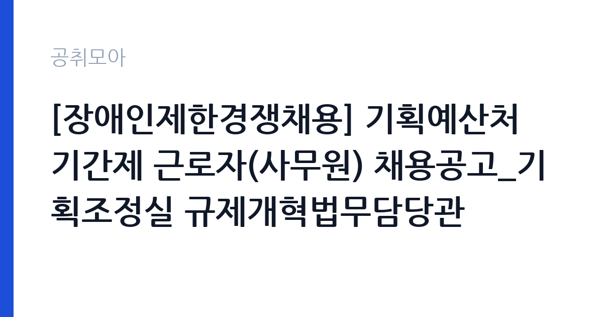

[국가기관] [장애인제한경쟁채용] 기획예산처 기간제 근로자(사무원) 채용공고_기획조정실 규제개혁법무담당관
기획예산처 · 세종 · 마감 2026-10-23 (D-19) · 출처 나라일터

한눈에 보는 모집 조건
| 기관 | 기획예산처 |
|---|---|
| 공고명 | [장애인제한경쟁채용] 기획예산처 기간제 근로자(사무원) 채용공고_기획조정실 규제개혁법무담당관 |
| 고용형태 | 기간제 |
| 근무지 | 세종 |
| 게시일 | 2026-10-02 |
| 마감일 | 2026-10-23 (D-19) |
지원자격, 이렇게 읽으세요
- 사무원 1명
- 접수 ~2026-10-23 마감
- 세부 조건은 원문 공고문 확인
이 공고는 장애인 제한경쟁채용이므로 장애인복지법상 등록 장애인만 지원할 수 있습니다. 모집 분야는 사무원 1명이며 세부 응시자격과 제출 서류는 원문 공고문에서 확인하셔야 합니다. 중앙부처 사무원 직무는 통상 문서 작성과 자료 정리, 부서 행정 지원 업무를 맡으며 특정 전공이나 자격증을 요구하지 않는 경우가 많습니다. 다만 학력이나 경력 같은 세부 조건이 원문에 명시되어 있을 수 있으니 대조가 필요합니다. 장애인 제한경쟁은 일반 공고보다 지원자 풀이 작아 요건만 맞으면 합격 가능성이 상대적으로 높은 편입니다.
이 공고의 포인트
이 공고의 가치는 중앙부처 경력을 쌓을 수 있는 진입로라는 점입니다. 규제개혁법무담당관은 규제 심사과 법령 검토를 다루는 부서로, 여기서 쌓은 행정 경험은 이후 다른 공공기관 지원 때 경력으로 활용할 수 있습니다. 장애인 제한경쟁이라 일반 전형의 치열한 경쟁을 피할 수 있고, 마감일이 10월 23일로 여유가 있어 서류를 꼼꼼히 준비할 수 있습니다. 세종 근무라 충청권 거주자에게는 출퇴근 부담도 적습니다. 기간제라는 점은 감안해야 하지만 중앙부처 근무 이력 자체가 커리어에 남는 자산입니다.
전형은 어떻게 진행되나
원서 접수 마감은 2026년 10월 23일이며 세부 전형 단계는 원문 공고문에서 확인하셔야 합니다. 중앙부처 기간제 채용은 통상 서류 심사와 면접으로 진행됩니다. 서류 단계에서는 지원자격 충족 여부와 자기소개서를 중심으로 평가하므로, 장애인 제한경쟁 취지에 맞게 본인의 강점과 직무 연관성을 명확히 쓰시는 것이 중요합니다. 접수 방법이 온라인인지 이메일인지 우편인지 원문에서 확인하고, 마감일 혼잡을 피해 여유 있게 제출하십시오.
이런 분께 추천해요
- 세종·충청권에 거주하는 등록 장애인 구직자분께 가장 적합합니다.
- 중앙부처 행정 경험을 쌓아 이후 공공기관 취업으로 연결하고 싶은 분께 추천합니다.
- 사무 보조나 문서 행정 업무 경험이 있어 바로 적응할 수 있는 분께 잘 맞습니다.
지원 전 체크리스트
- 장애인 제한경쟁이므로 등록 장애인 자격 요건을 먼저 확인하십시오.
- 배치 부서와 담당 업무, 계약 기간을 원문 공고문에서 확인하십시오.
- 접수 방법과 제출 서류를 확인하고 장애인 관련 증빙을 미리 발급받으십시오.
- 마감일인 10월 23일에 임박해 제출하지 말고 여유 있게 접수하십시오.
모집 일정과 제출 타이밍
원서 접수 마감일은 2026년 10월 23일로 접수 기간이 3주 가까이 있어 준비 시간이 넉넉합니다. 다만 증빙 서류 발급에 시간이 걸릴 수 있으니 10월 16일 전에는 준비를 시작하시는 것이 안전합니다. 서류 심사와 면접 일정은 원문 공고문에 안내되어 있으니 원문에서 확인하십시오. 접수 기간이 길다고 미루지 말고 일찍 제출해 두시는 것을 권장합니다.
직무 이해하기: 국가기관
배치 부서는 기획조정실 규제개혁법무담당관이며 사무원으로서 부서 행정 지원 업무를 맡게 됩니다. 규제개혁법무담당관은 규제 심사과 신설·강화 규제 검토, 법령 해석과 송무 지원 같은 업무를 다루는 부서로 알려져 있습니다. 사무원은 회의 자료 준비와 문서 정리, 민원 응대와 일정 관리 같은 지원 업무를 수행합니다. 구체적인 담당 업무는 원문 공고문에서 확인하십시오.
자기소개서 작성 팁
지원서에는 사무 행정 관련 경험을 구체적으로 적으십시오. 문서 작성이나 자료 정리, 민원 응대 경험이 있다면 사례 중심으로 쓰시는 것이 좋습니다. 규제개혁이나 법무라는 부서 특성을 언급하며 공공 행정에 대한 관심을 보여주면 좋은 인상을 줄 수 있습니다. 장애인 제한경쟁 전형이므로 본인의 강점과 직무 수행 능력을 솔직하고 자신감 있게 표현하십시오. 오탈자 없이 간결하게 작성하고 제출 전 다시 읽어보십시오.
면접 준비 포인트
면접에서는 사무직 기본 역량과 조직 적응력을 묻는 질문이 중심이 될 가능성이 높습니다. 문서 작업 숙련도와 민원 응대 경험, 여러 업무가 겹칠 때 우선순위를 정하는 방법 같은 질문에 대비하십시오. 세종 근무와 출퇴근 계획, 계약 기간에 대한 생각도 물을 수 있으니 미리 정리해 두십시오. 밝고 성실한 태도를 보여주는 것이 중요하며 면접 복장은 단정하게 갖추십시오.
급여·근무조건 읽는 법
이 공고 원문에 보수 조건이 별도로 안내되어 있으니 정확한 금액은 원문 공고문에서 확인하셔야 합니다. 참고로 중앙부처 기간제 사무원은 통상 2026년 최저임금인 월 2,156,880원(시급 10,320원, 주 40시간 기준, 고용노동부 고시)을 하한으로 보수가 책정되며, 여기에 급식비와 명절상여금 등이 기관 규정에 따라 붙는 구조입니다. 일급제인지 월급제인지, 수당 구성이 어떤지는 원문 붙임 공고문의 근무조건란에서 확인하십시오. 출처가 확인되지 않은 수치는 믿지 마시고 원문 기준으로 판단하십시오.
자주 묻는 질문
- 장애인 제한경쟁이란 무엇인가요?
등록 장애인만 지원할 수 있는 별도 전형으로 일반 공고보다 지원자 풀이 작습니다. 장애인복지법상 등록 장애인 자격이 필요하며 증빙 서류를 제출해야 합니다. - 규제개혁법무담당관은 어떤 부서인가요?
규제 심사와 법령 검토를 다루는 부서로 알려져 있으며 사무원은 행정 지원 업무를 맡습니다. 구체적인 업무는 원문 공고문에서 확인하십시오. - 계약 기간은 어떻게 되나요?
기간제 근로자 채용이므로 계약 기간과 갱신 가능 여부가 원문 공고문에 명시되어 있습니다. 지원 전 반드시 확인하십시오.
함께 보면 좋은 공고
[국가기관] 한국방송통신대학교 대구경북지역대학 청사관리직(미화방호) 채용공고(무기계약직(기간제계약직)) — 마감 2026-10-15[국가기관] 국립창원대학교 입학과 기간제근로자(입학사정관) 채용 공고 — 마감 2026-10-12[국가기관] 2026년 인제경찰서 무기계약(보일러 등 시설관리) 근로자 채용 재공고 — 마감 2026-10-08출처: 나라일터 공개정보를 바탕으로 공취모아가 정리한 안내글입니다. 모집 조건·일정은 변경될 수 있으니 지원 전 반드시 원문 공고문을 확인하세요. 본 글은 정보 제공용이며 합격을 보장하지 않습니다.